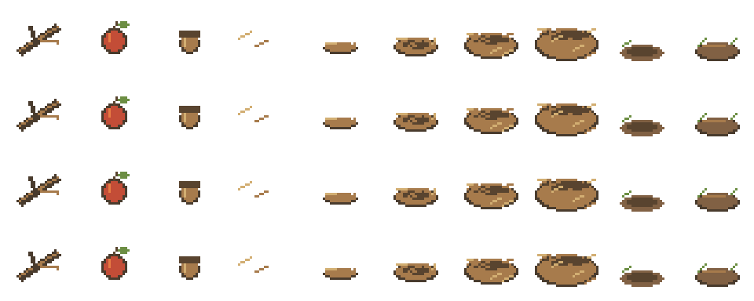

Original native-pixel twigs, fruit, nuts, five nest construction stages, empty and stocked food cache. Pending human review.

Each carried material is a real saved entity. Nest stages consume actual twigs; squirrel caches store actual food identity.